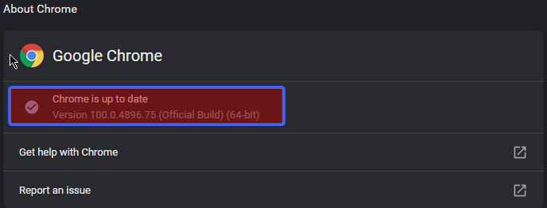
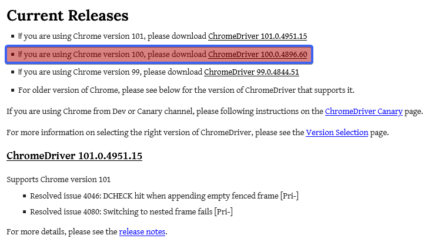
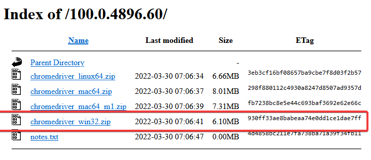
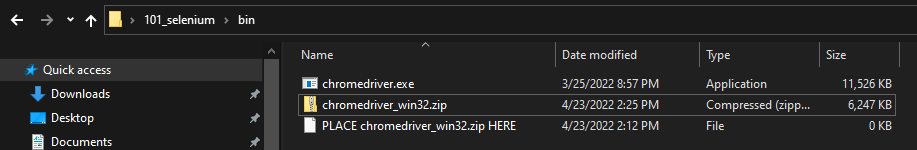
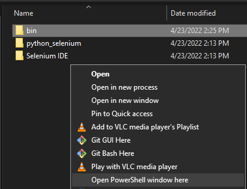

Installing Selenium For Google Chrome (Windows 10)
Installing Selenium For Google Chrome (Windows 10)
This tutorial will show you how to install Selenium for Google Chrome (Windows 10), and optionally Python related dependencies.
Prerequisites:
- Google Chrome Installed on your Windows machine
Guide Outline
Install the WebDriver
WebDriver (ChromeDriver for Chrome) gives Selenium access to control your web-browser.
Check Your Google Chrome Version
Find Chrome version (remember it for later):
… → Help → About Chrome

Download the ChromeDriver
- Download the Chromedriver Binary (which matches your Chrome version):
 
Extract the
chromedriver_win32.zipanywhere.Copy the absolute path to
chromedriver.exe(remember it for later, it is needed for Python and other scripts).

- You can now delete the
chromedriver_win32.zipit will not be needed anymore. Your WebDriver installation is complete.
Python Set-up
prerequisites:
- Python 3 - installed
- pip - Python package manager installed
We will finish the set-up required for running Python based Selenium scripts.
Open PowerShell
Hold shift + mouse2; then click "Open PowerShell window here" 
Install Python Selenium Package
In the PowerShell, enter:
pip install selenium
Verify Python Selenium Installation
In the PowerShell, enter:
python
In the Python REPL, enter:
>>> import selenium
If no errors occurred during pip install selenium, and import selenium you are done with your Python set-up.
Remember absolute path to the chromedriver.exe in your Python scripts.